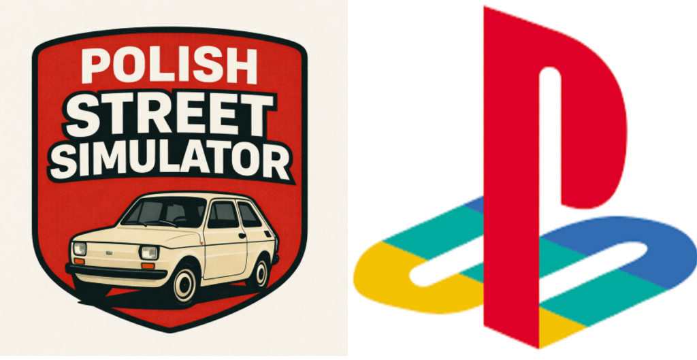
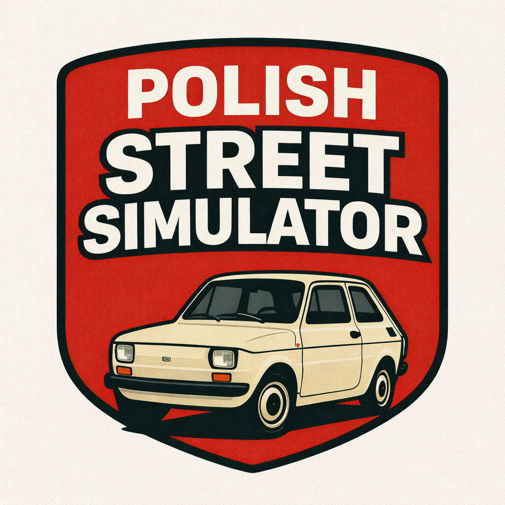

& Polish Street Simulator Community


Witaj w oficjalnej społeczności graczy Polish Street Simulator! To miejsce dla fanów retro klimatu, motoryzacji, tuningowania oraz unikalnych projektów tworzonych przez polską społeczność.
Dołącz do nas, poznaj ekipę, podziel się swoimi pomysłami, graj razem z innymi i bierz udział w eventach!
Wkrótce!
Wkrótce!
W naszej społeczności znajdziesz również osoby, które znają się na przerabianiu różnych konsol — od klasycznych retro sprzętów po nowsze generacje. Doradzimy, pomożemy i podpowiemy, jak najlepiej wykorzystać potencjał Twojej konsoli.
Czy przeróbka jest bezpieczna?
Tak, jeśli jest robiona poprawnie.
Czy mogę dostać bana za przerobienie konsoli?
Tak, dlatego należy przerabiać jeśli straci wsparcie internetowe.